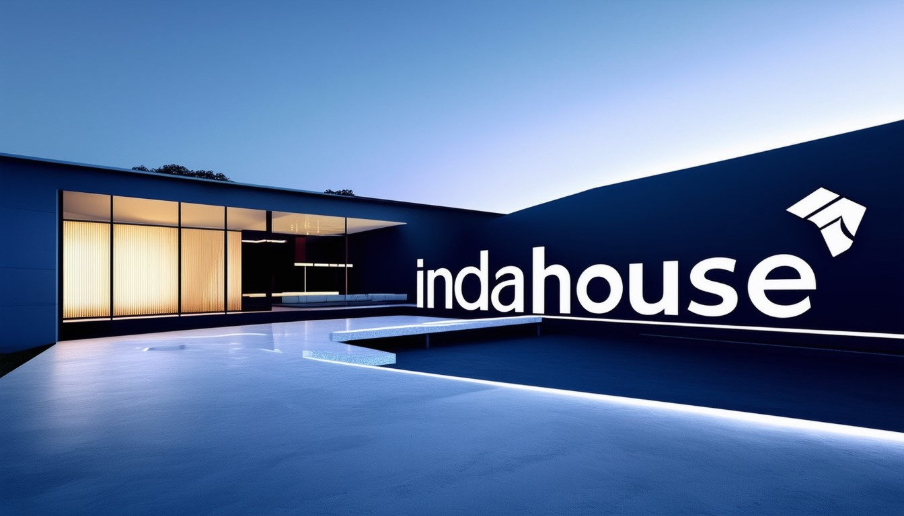

Indahouse Concept inc. is a premier data solutions provider specializing in delivering comprehensive data analytics, business intelligence, business analysis, project planning, machine learning, data science, and data engineering services. Our mission is to empower organizations with actionable insights and innovative data solutions that drive growth and efficiency.
Our Services
1. Data Analytics
- Descriptive Analytics: Analyzing historical data to identify trends and patterns.
- Predictive Analytics: Using statistical models and forecasts techniques to understand future outcomes.
- Prescriptive Analytics: Recommending actions you can take to affect desired outcomes.
2. Business Intelligence
- Dashboard Development: Creating interactive and real-time dashboards using tools like Power BI and Tableau.
- Reporting Solutions: Developing custom reports that provide actionable insights.
- Data Visualization: Transforming complex data sets into intuitive visualizations.
3. Business Analysis
- Requirement Gathering: Understanding and documenting business requirements.
- Process Improvement: Identifying and implementing process improvements.
- Stakeholder Management: Managing communication between stakeholders and the project team.
4. Project Planning
- Project Roadmaps: Developing detailed project plans and timelines.
- Resource Allocation: Ensuring optimal allocation of resources for project success.
- Risk Management: Identifying and mitigating potential project risks.
5. Machine Learning
- Model Development: Building predictive models using machine learning algorithms.
- Algorithm Optimization: Fine-tuning algorithms for better performance.
- Deployment: Implementing machine learning models in production environments.
6. Data Science
- Data Exploration: Analyzing and interpreting complex data sets.
- Statistical Analysis: Applying statistical techniques to derive insights.
- Custom Solutions: Developing tailored data science solutions to meet specific business needs.
7. Data Engineering
- Data Pipeline Development: Creating efficient data pipelines for ETL processes.
- Database Management: Designing and maintaining robust database systems.
- Big Data Solutions: Implementing solutions for handling large-scale data.
Case Studies
1. Improving Customer Retention for Retail Client
- Client: Major Retailer
- Challenge: High customer churn rate.
- Solution: Implemented predictive analytics to identify at-risk customers.
- Outcome: Reduced churn rate by 15% within six months.
2. Real-Time BI Dashboard for Financial Services and other small enterprises.
- Client: Financial Services Firm
- Challenge: Lack of real-time insights into financial performance.
- Solution: Developed a comprehensive Power BI dashboard.
- Outcome: Provided executives with real-time data, leading to quicker decision-making and a 10% increase in operational efficiency.
3. Optimizing Supply Chain with Machine Learning
- Client: Manufacturing Company
- Challenge: Inefficient supply chain leading to high operational costs.
- Solution: Built a machine learning model to predict demand and optimize inventory levels.
- Outcome: Reduced inventory costs by 20% and improved order fulfillment rates by 30%.
Technology Stack
We leverage a broad range of technologies to deliver our services efficiently:
- Data Analytics & BI: Power BI, Tableau, SQL, Python, R
- Machine Learning & Data Science: TensorFlow, Scikit-Learn, Keras, PyTorch, Jupyter Notebook
- Data Engineering: Apache Hadoop, Apache Spark, Kafka, AWS, Azure, Google Cloud Platform
- Project Management: Microsoft Project, Asana, Trello, Jira
Our Approach
1. Consultation
- Understanding client needs and defining project scope.
- Conducting thorough analysis to tailor solutions.
2. Strategy Development
- Developing a strategic plan that aligns with client goals.
- Designing a roadmap for implementation.
3. Implementation
- Executing the strategy using the latest tools and methodologies.
- Regularly updating the client on progress.
4. Evaluation
- Monitoring performance and making necessary adjustments.
- Providing detailed reports and actionable insights.
5. Support
- Offering ongoing support and maintenance.
- Ensuring continuous improvement and optimization.
Why Choose Us?
- Expert Team: Our team consists of highly skilled professionals with extensive experience in data solutions.
- Customized Solutions: We offer bespoke solutions tailored to meet specific business needs.
- Proven Track Record: We have a history of delivering successful projects and driving measurable results.
- Cutting-Edge Technology: We leverage the latest technologies to provide innovative and efficient solutions.
- Client-Centric Approach: We prioritize our clients' needs and ensure their satisfaction with our services.
Client Testimonials
"The team at Indahouse data solutions transformed our data management processes, providing insights that have significantly improved our decision-making
." — Project manager, Olumoroti FBN
"Their expertise in machine learning helped us optimize our supply chain, reducing costs and improving efficiency." — CEO, Blackacre Realtors limited